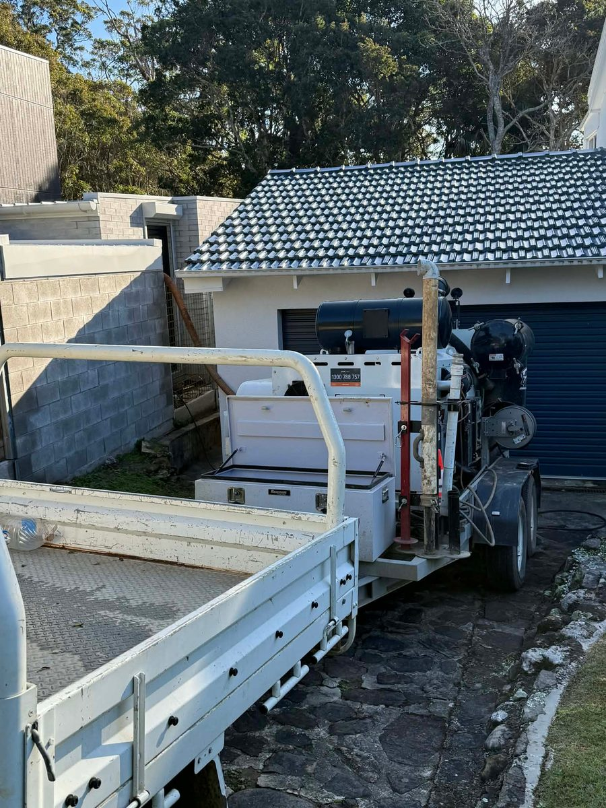

Non-Destructive Digging
Expose underground services — gas, water, electrical, NBN — using pressurised water and vacuum. The method is designed to be safe around existing infrastructure.
Learn more →GreenVac's compact hydrovac setup reaches tight sites larger machines can't, delivering precise excavation around buried services, structures, gardens and finished surfaces.
Canberra ACT & Southern NSW


Compact, purpose-built equipment for tight-access work where a bigger machine isn't the right fit — potholing, trenching, leak exposure, and precise digging in driveways, side passages, established gardens, and confined residential sites.
Expose underground services — gas, water, electrical, NBN — using pressurised water and vacuum. The method is designed to be safe around existing infrastructure.
Learn more →Precision potholing to verify the exact location and depth of underground services. We expose it carefully, you confirm the details before your crew moves in.
Learn more →Short, targeted hydrovac trenches where a full-size machine would mean too much disruption. Minimal footprint. Methodical work around existing services and surfaces.
Learn more →Precision excavation around suspected leak points. Exposes pipes without damaging surrounding infrastructure or landscaping.
Learn more →Clearing sludge, debris, and sediment from cattle grids, service pits, culverts, and stormwater systems.
Learn more →Narrow paths, garden beds, poolside, under retaining walls, alongside pavers — if there's no room for a digger, there's room for us. This is what we do.
Learn more →Not sure if we're the right fit? Here's the short version.
We don't do large-scale earthmoving — we do precision. If you need a narrow trench cut carefully through a garden, along a path, or in a tight residential site, that's exactly what we're set up for.
Most excavation operators want the big, easy jobs. GreenVac is set up for the opposite — tight sites where the standard approach means too much disruption: established gardens, side passages, work alongside live services, confined residential areas. That's the job we're built for.
Narrow paths, garden beds, poolside, under retaining walls, alongside pavers — if a full-size machine can't get there without causing damage, call us.
Hydrovac pulls out exactly what's needed — nothing more. No excess spoil, no skip bin hire, no tip runs, no cleanup costs after the job. The precision is built into how the equipment works.
No traffic control plans, no permits, no waiting on approvals. We set up and dig the same day. One call and it's sorted.
No dispatch, no call centre. Ring 0408 362 590 and you're dealing with James direct — and if he's out on the rig, he'll get back to you as soon as he can.

Where there's no room for a digger, there's room for us.
"Highly recommend James from Greenvac. I organised James to hydrovac around 2 water meter pits that were in highly compacted ground. James cleaned out the area perfectly and made my job 10 times easier. James was professional and does a professional job. I will be using James for all my future hydrovac projects."
"James is professional and communicative. The work he has done has been quality and an absolute must if you are working around old and not well recorded utilities."
"I recently had Green Vac assist with a tricky plumbing issue, and I couldn't be happier with the outcome. The team tackled a hard-to-reach plumbing fitting with incredible skill and precision. Their professionalism and expertise were outstanding."
"Awesome experience with the guys from Greenvac. Very professional with great care and attention to the site and surrounding garden. Great communication throughout with a successful result."
"James was timely, efficient, professional and did a great job. Would highly recommend."
"Very professional from start to finish."
"Great people excellent work! Very helpful and quick response. Reasonable priced!"
5-star Google rating
Based in Braidwood NSW, servicing Canberra ACT as our primary market. View full service area →
Answer a few questions about your job and get a ballpark price straight away. No sign-up, no waiting. Every enquiry gets a personal follow-up.